오세웅 대표님 이야기
“암보다 더 두려웠던 건, 다시 사회로 돌아갈 수 있을지 모른다는 불안이었다”
2020년 8월, 오 씨는 밤마다 식은땀을 흘렸다. 열도 좀처럼 떨어지지 않았다. 처음에는 냉방병이라고 생각했다. 병원을 찾아 감기약과 천식약을 처방받았지만 증상은 나아지지 않았다. 시간이 지나면서 등 통증이 심해졌다. 상급종합병원에서 추가 검사를 받은 뒤에야 이유를 알 수 있었다. 암이었다.
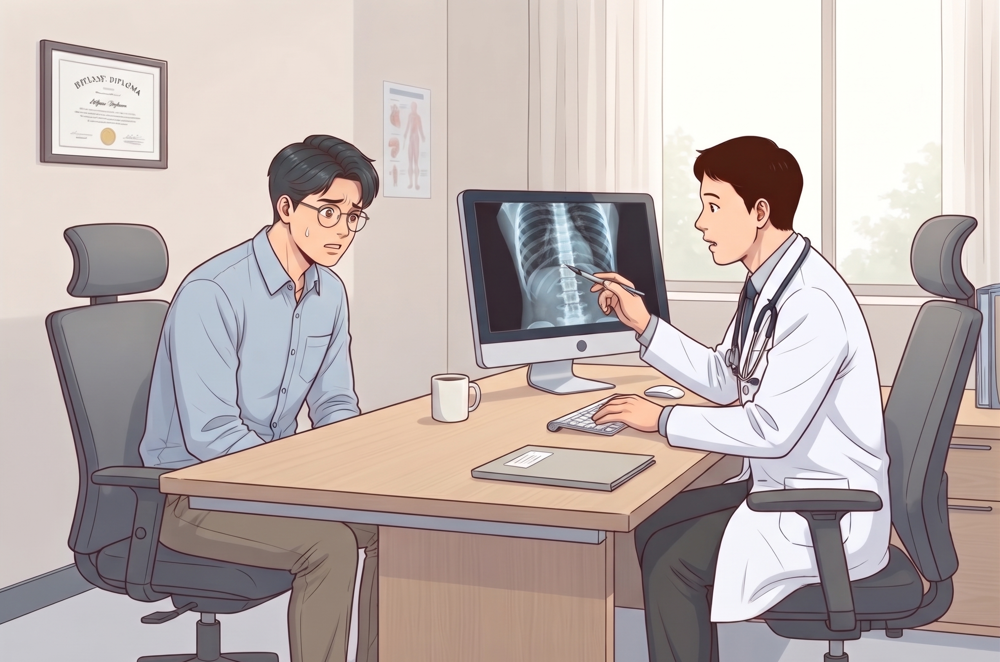
암 진단 이후 오 씨의 일상은 빠르게 달라졌다. 사회생활을 중단했고 집에서 보내는 시간이 늘었다. 치료가 시작되면서 머리카락을 비롯한 온몸의 털이 빠졌고 피부색도 변했다. 통증 때문에 아무것도 하지 못하는 날도 있었다. 입안이 헐고 음식의 맛도 제대로 느껴지지 않았다. 무엇보다 힘들었던 것은 ‘불확실성’이었다.
“치료가 잘 될 수 있을지, 다시 사회로 돌아갈 수 있을지에 대한
불안감이 제일 컸던 것 같아요.”
암이 끝나도 삶의 공백은 남았다
오 씨는 암을 치료하는 과정에서 또 다른 문제를 마주했다. 바로 사회복귀였다. 암을 진단받기 전 오 씨는 전략 컨설팅 분야에 관심을 갖고 관련 회사에서 인턴 프로젝트를 진행하며 정직원 전환을 준비하고 있었다. 그러나 암 진단과 함께 계획했던 커리어는 멈췄다.
치료가 끝난 뒤에도 상황은 쉽게 달라지지 않았다. 회사에 돌아가기에는 체력이 충분히 회복되지 않았고, 한동안 사회와 떨어져 지내면서 자신이 뒤처졌다는 생각도 들었다.
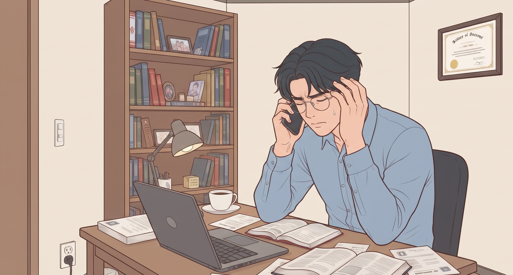
“암 경험자라는 이유만으로 왜 사회적 약자가 되어야 하나”
오 씨는 청년암 환자들을 위한 복지가 아직 충분하지 않다고 말했다. 청년을 위한 복지정책 자체는 어느 정도 마련돼 있지만, 취약계층으로 분류되지 않는 암 환자 청년을 대상으로 한 정책은 사실상 부족하다는 것이다.
특히 암을 겪은 뒤 생긴 경력 공백은 사회 복귀 과정에서 또 다른 장벽이 된다. 실제로 오 씨가 암 경험자의 사회 복귀 문제를 알아보기 위해 채용 사이트에서 53개 기업에 연락했던 경험은 이를 보여준다. 당시 암 경험자 대상 사회복귀 프로그램의 채용 공고를 올릴 수 있는지 문의했지만, 52곳에서 거절했다.
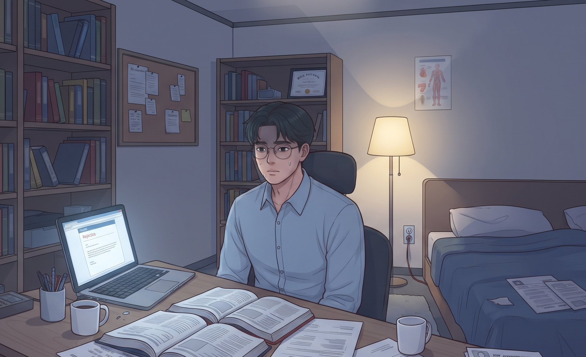
정보를 찾을 곳은 결국 ‘환자들’이었다
암을 진단받았을 당시 오 씨가 가장 많이 의지했던 것은 온라인이었다. SNS와 카카오톡 단체방, 암 환자 커뮤니티를 찾아다녔다. 이러한 경험은 이후 오 씨가 ‘암뮤니티’를 만드는 계기로도 이어졌다.
처음에는 의사와 환자 사이의 소통을 돕는 서비스를 만들고 싶었다. 자신이 치료 과정에서 가장 힘들었던 ‘불확실성’을 줄이고, 환자가 어려운 순간 빠르게 판단할 수 있도록 돕는 것이 목표였다. 현재는 조금 다른 방향을 고민하고 있다. 암 환자들이 살아가는 사회에 선한 영향력을 줄 수 있는 서비스를 만드는 것이다. 암을 경험한 사람이 다시 사회로 돌아가는 과정에서 겪는 어려움을 직접 경험했기 때문에, 그 공백을 줄이는 방법을 계속 찾고 있다.
“다시 시작할 때는 작은 것부터”
오 씨가 같은 상황에 놓인 청년암 환자들에게 가장 먼저 건네고 싶은 말은 ‘도전’이다. 그는 처음부터 예전의 삶으로 돌아가려고 하기보다 작은 성취부터 쌓아가는 것이 중요하다고 말했다. 하루에 팔굽혀펴기 세 번, 철봉에 10초 매달리기, 맨몸 스쿼트 10개부터 시작했다. 3개월이 지나자 한 시간 정도 운동할 수 있는 체력이 생겼고, 7개월 뒤에는 두 시간 동안 맨몸 운동을 할 수 있을 정도로 몸이 회복됐다.
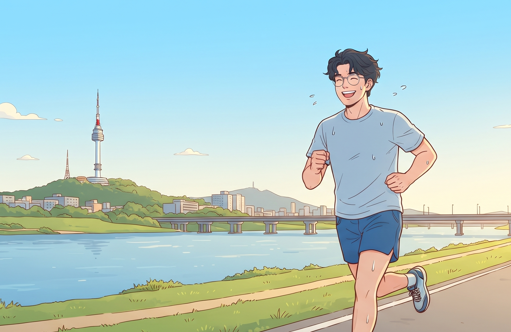
오 씨는 그때부터 사회 복귀를 생각하기 시작했다. 암 진단 이후 멈춰버린 삶을 한 번에 되돌리는 대신, 눈앞의 작은 목표부터 하나씩 해결해 나간 것이다.
오 씨는 암이 자신의 삶에서 완전히 사라지는 날만 기다리고 있지는 않다. 오히려 암을 경험한 이후의 삶과 함께 살아가는 방법을 찾고 있다. 그리고 그 과정에서 자신이 얻은 가장 큰 깨달음을 다른 청년암 환자들에게 전하고 싶다고 했다.
“힘든 건 분명히 있을 거니까 그런 것들은 서로 잘 나눴으면 좋겠어요.
무조건 도전을 바로 멈추지는 않았으면 좋겠어요.”
고지연님 이야기
“치료는 끝났는데, 내 삶은 폐허 같았다”…암 이후 다시 사회로 돌아오기까지
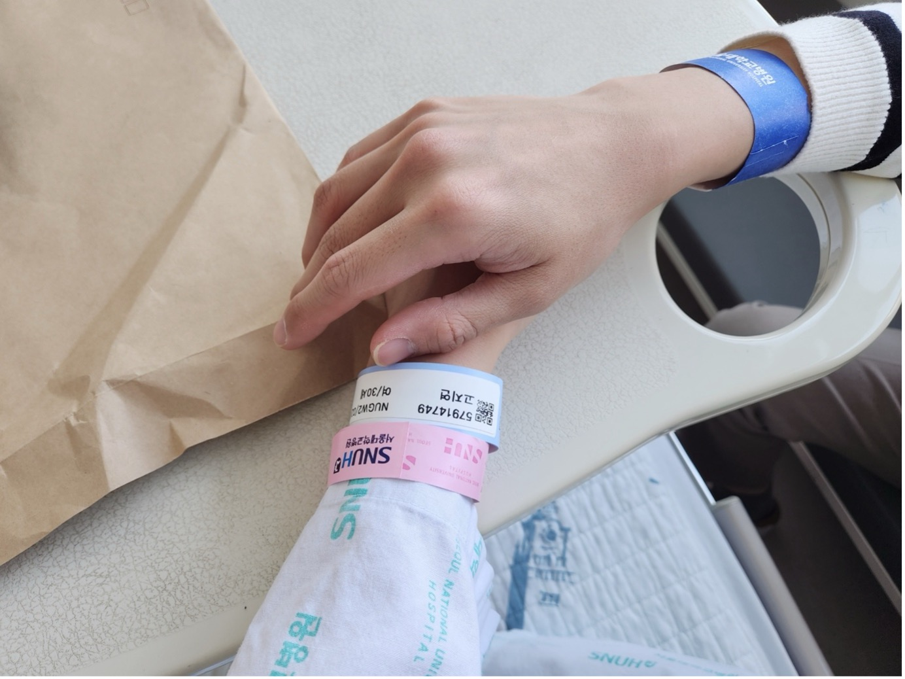
2022년 11월, 만 30세였던 고 씨는 유방암 1기 진단을 받았다. 시작은 가벼운 통증이었다. 남편과 포옹하던 중 가슴에 통증을 느꼈고, 시간이 지나도 사라지지 않는 덩어리가 만져졌다. 샤워를 하며 자세히 확인해 보니 반대편과는 확연히 다른 단단한 덩어리가 느껴졌다.
처음에는 대수롭지 않게 생각했다. 하지만 시간이 지날수록 불안감이 커졌다. 고 씨는 ‘이대로 기다려도 되는 걸까’라는 생각에 더 빠르게 진료를 받을 수 있는 병원을 찾아 검사를 받았다. 조직검사 결과는 예상보다 무거웠다. 이후 대학병원으로 옮겨 적극적인 치료를 시작했다. 수술을 비롯해 항암과 방사선 치료까지 약 1년이 넘는 치료 과정이 이어졌다.
치료보다 힘들었던 것은 ‘치료가 끝난 이후’였다
“암에 걸렸을 때는 빨리 치료해야 한다는 목표가 너무 뚜렷했어요.
병원도 자주 가야 하고, 치료 결과를 긍정적으로 기대하려면 저도 씩씩하게 지내야 했고요.”
하지만 치료가 끝난 순간부터 상황이 달라졌다. 몸은 회복되지 않았고, 직장에서는 이미 퇴사한 상태였다.
“처음에는 ‘내 인생은 망했다’라는 생각을 많이 했어요.
병으로 인해서 제가 되게 많이 망가졌다는 생각도 강하게 들었고요.”
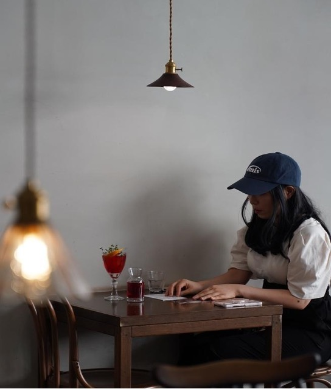
치료 이후 고 씨는 회사로 돌아갈지, 새로운 방식으로 사회에 복귀할지를 고민했다. 결국 선택한 것은 프리랜서였다. 처음부터 거창한 목표를 세운 것은 아니었다. 이전의 커리어를 활용해 재택으로 할 수 있는 작은 일부터 시작했다.
조금씩 일이 늘어나면서 네트워크도 형성됐다. 여러 개의 일을 작은 단위로 나눠 진행하며 수입을 안정적으로 만들어갔다. 그렇게 약 2년의 시간이 지나면서 고 씨는 회사에 복귀하지 않고도 독립적인 프리랜서로 일할 수 있는 기반을 마련했다.
청년 암 환자에게 필요한 것은 ‘치료 이후’까지 바라보는 정책
고 씨는 현재 청년 암 환자를 위한 정책이 충분하지 않다고 느꼈다. 최근 의료비 지원 정책이 늘어난 점은 긍정적으로 평가했지만, 소득 기준 등에 따라 실제 혜택을 받는 대상이 제한될 수 있다는 점을 지적했다. 특히 20대 후반이나 30대 초반처럼 사회초년생을 갓 벗어난 청년들은 기존 청소년 암 지원과 성인 암 지원 사이에서 상대적으로 정책의 사각지대에 놓일 수 있다고 봤다.
“조금 더 초기 단계에 해당하는 암 환자들에게 실효성 있는
치료비 지원 사업이 확대되면 좋지 않을까 생각했어요.”
경제적 부담 역시 치료비에만 한정되지 않았다. 고 씨는 암 진단 이후 직장을 잃으면서 소득 자체가 끊기는 것이 더 큰 문제라고 설명했다. 특히 20대 청년들은 암보험 등 경제적 대비가 충분하지 않은 경우가 많다는 점도 언급했다. 고 씨가 실제로 받은 제도적 지원은 실업급여였다. 그러나 질병으로 인한 비자발적 퇴사의 경우 필요한 서류가 많았고, 치료가 끝나기 전에는 정상적인 구직 활동이 어렵다는 문제가 있었다.
고 씨가 강조하는 것은 암 환자의 ‘치료 기간’뿐 아니라 치료 이후의 삶까지 지원하는 정책이다. 치료가 끝났다고 해서 곧바로 이전의 삶으로 돌아갈 수 있는 것은 아니기 때문이다.
“암에 걸린 건 여러분의 탓이 아닙니다”
고 씨는 암을 진단받은 청년들에게 가장 먼저 자책하지 말 것을 당부했다.
“암에 걸린 건 여러분의 탓이 아닙니다. 우리는 조금 운이 나빴을 뿐이에요.”
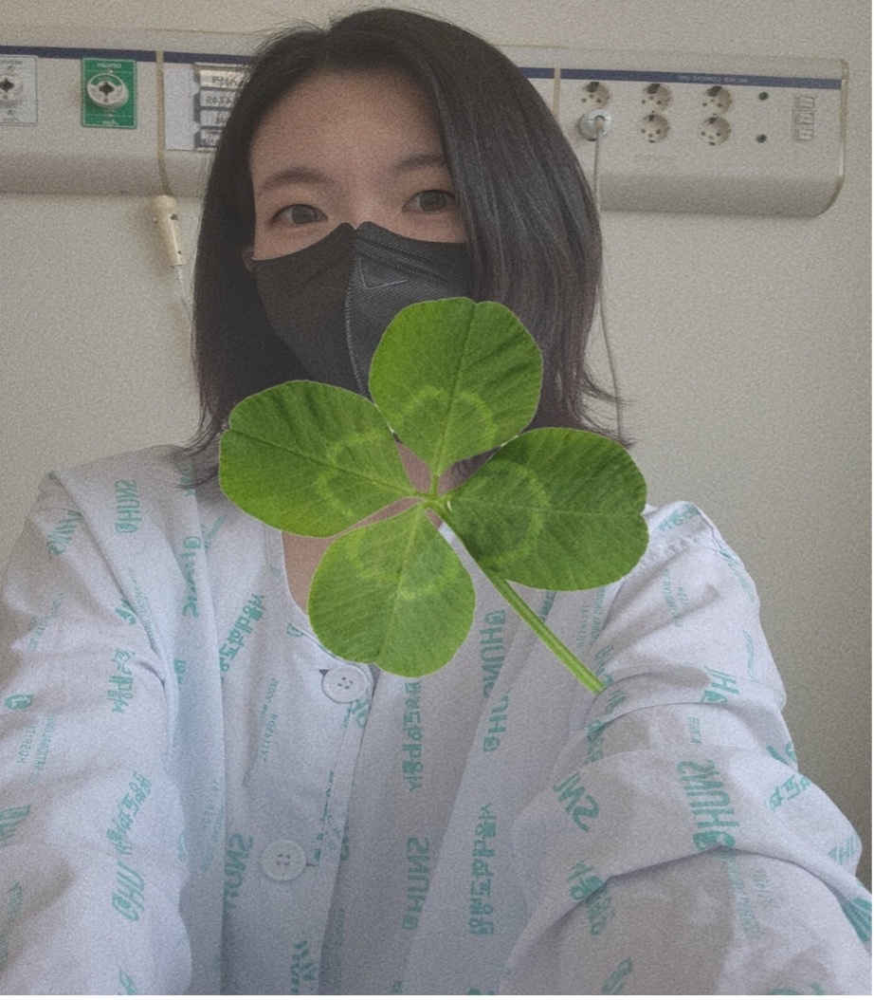
김수지님 이야기
“한창 활동하고 일할 나이에 암을 진단받으니 막막했어요”
29세. 한창 사회생활을 이어가며 미래를 준비할 나이에 김 씨는 암을 진단받았다. 시작은 왼쪽 어깨와 쇄골 부위의 통증이었다. 내과에서 초음파 검사를 받았지만 특별한 이상이 발견되지 않았다. 그러나 통증은 계속됐고, 여성외과를 찾아 조직검사를 받은 뒤 암을 진단받았다.
결국 치료를 위해 직장을 중단해야 했다. 갑작스럽게 일상을 멈춰야 했던 경험은 경제적인 문제를 넘어 심리적인 불안으로 이어졌다. 이후 다시 직장으로 돌아갔지만, 이전과 같은 업무를 수행하는 데에는 체력적인 어려움이 따랐다. 업무 자체는 이어갈 수 있었지만 치료 전과 같은 체력을 기대하기는 어려웠다.
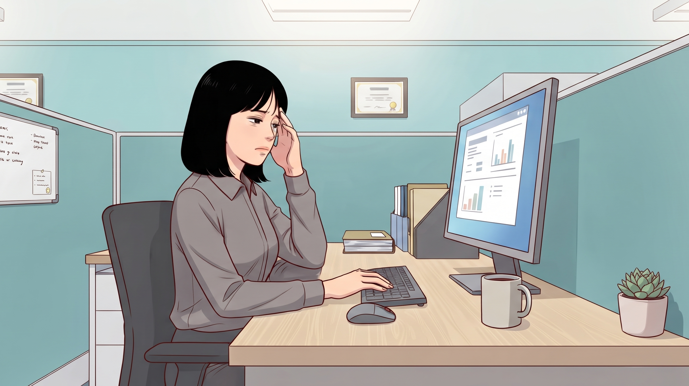
“청년 암 환자를 위한 정책은 하나도 없다고 생각해요”
김 씨는 현재 청년 암 환자를 위한 정책이 충분히 마련되어 있지 않다고 느꼈다. 직장생활과 치료를 병행해야 하는 청년 암 환자를 위해 치료 과정에서 연차를 자유롭게 사용할 수 있도록 하는 제도가 필요하다고 강조했다. 또한 암 치료 이후 취업 과정에서 받을 수 있는 지원도 필요하다고 봤다. 치료로 인해 경력이 단절될 수 있는 만큼, 청년 암 환자가 다시 취업할 수 있도록 지원하는 정책이 마련돼야 한다는 것이다.
병원 오가는 교통비부터 식비까지…치료가 남긴 경제적 부담
김 씨는 치료를 위해 거주지에서 서울까지 병원을 오가고 있다. 장거리 통원 과정에서 발생하는 교통비와 약값, 병원비가 부담으로 다가왔다. 치료 과정에서는 건강을 위해 식단과 식재료에도 신경을 써야 하지만, 이 역시 경제적 부담으로 이어졌다. 김 씨는 “암 환자는 면역력이 좋지 않다 보니 건강을 잘 챙겨야 하는데 식비와 식재료비도 부담되는 것 같다”고 말했다.
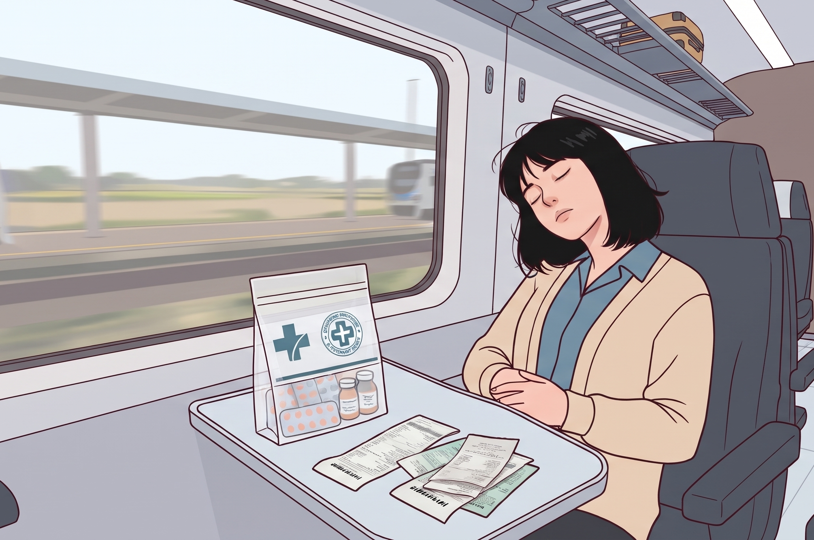
“죽음이 다가왔구나”…암 진단 후 달라진 미래
암 진단 직후 김 씨를 가장 힘들게 했던 것은 죽음에 대한 생각이었다. “나한테 죽음이 다가왔구나”라는 생각을 하게 되면서 막연한 두려움이 찾아왔다. 여기에 치료를 받으며 몸이 이전과 같지 않다는 사실을 받아들이는 것도 쉽지 않았다. 미래에 대한 고민도 달라졌다. 커리어에 대해서는 큰 변화가 없었지만, 결혼과 출산에 대해서는 포기하게 됐다. 구체적인 결혼이나 출산 계획을 세워둔 것은 아니었다. 그러나 암 진단을 받은 뒤에는 이러한 미래를 고민하기보다 자신의 건강과 삶을 우선해야 한다고 생각하게 됐다.
“너무 힘들고 막막하겠지만, 잘 이겨냈으면”
암을 진단받은 뒤 김 씨는 친구들에게 자신의 투병 사실을 알리지 않았다. 긍정적인 이야기가 아닌 만큼 굳이 이야기하고 싶지 않았고, 평소처럼 친구들을 만나는 것이 오히려 편했기 때문이다. 가족들은 투병 사실을 알고 있었지만, 잘 알지 못하는 상황에서 지나치게 관심을 보이는 것이 때로는 불편하게 느껴지기도 했다.
그럼에도 김 씨는 자신과 같은 상황에 놓인 청년들에게 자신의 경험을 전하고 싶다고 말했다.
“너무 젊은 시기에 암을 진단받아서 힘들고 막막하겠지만, 잘 이겨내셨으면 좋겠습니다.”
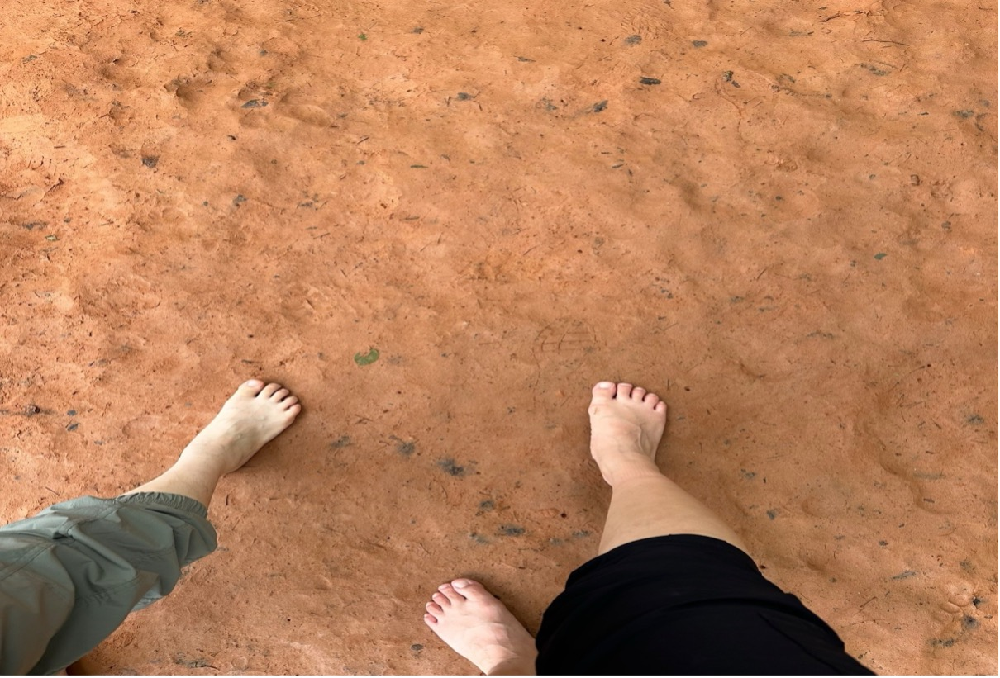
이금희님 이야기
치료가 끝났다고 일상이 바로 돌아오는 건 아니더라고요
2021년 자궁내막증으로 수술적 치료를 받은 뒤 정기적으로 병원을 찾던 이 씨는 진료 과정에서 새로운 혹이 발견되면서 암 진단을 받았다. 예상하지 못했던 진단이었다. 특히 젊은 나이에 암을 마주하면서 치료뿐만 아니라 직장과 경제적 문제, 앞으로의 삶에 대한 고민까지 한꺼번에 짊어져야 했다.
이 씨가 치료 과정에서 가장 크게 체감한 어려움은 일상의 단절이었다. 치료를 위해 직장을 그만두면서 경력이 끊겼고, 치료 이후에도 이전과 같은 생활로 돌아가는 것은 쉽지 않았다. 그는 “2030 암 환우들이 치료를 위해 직장을 그만두면서 보통 6개월에서 1년 이상 경력이 단절된다”며 “저 역시 치료로 인한 체력 저하와 부작용 때문에 이전의 일상이나 직장으로 복귀하는 것이 쉽지 않았다”고 말했다.
신체적인 한계만이 문제는 아니었다. ‘아픈 사람은 일을 못 한다’, ‘고용하기 부담스럽다’는 사회적 시선 역시 직업 복귀를 어렵게 만드는 요인이었다. 치료 이후 일할 수 있는 능력이 남아 있어도 암 환자라는 이유만으로 고용에 대한 부담을 느끼는 시선이 존재한다는 것이다.
수입은 끊겼지만 생활비는 감당해야 했다
투병 과정에서 경제적인 부담도 컸다. 경력이 단절되면서 수입은 끊겼지만 기본적인 생활을 위해 필요한 고정비는 계속 발생했다. 재취업이나 직장 복귀가 쉽지 않은 상황에서 경제적인 불안까지 감당해야 했던 것이다.
다행히 이 씨는 이용할 수 있는 지원 제도를 적극적으로 찾아 나섰다. 실업급여를 비롯해 국민취업지원제도와 미래일경험 인턴십 등을 경험했다. 그러나 이러한 제도만으로 청년 암 환자의 직업 복귀 문제를 해결하기에는 한계가 있다고 봤다. 그는 기업의 인식과 사회적 시선, 근로 조건의 개선이 가장 시급하다고 강조했다.
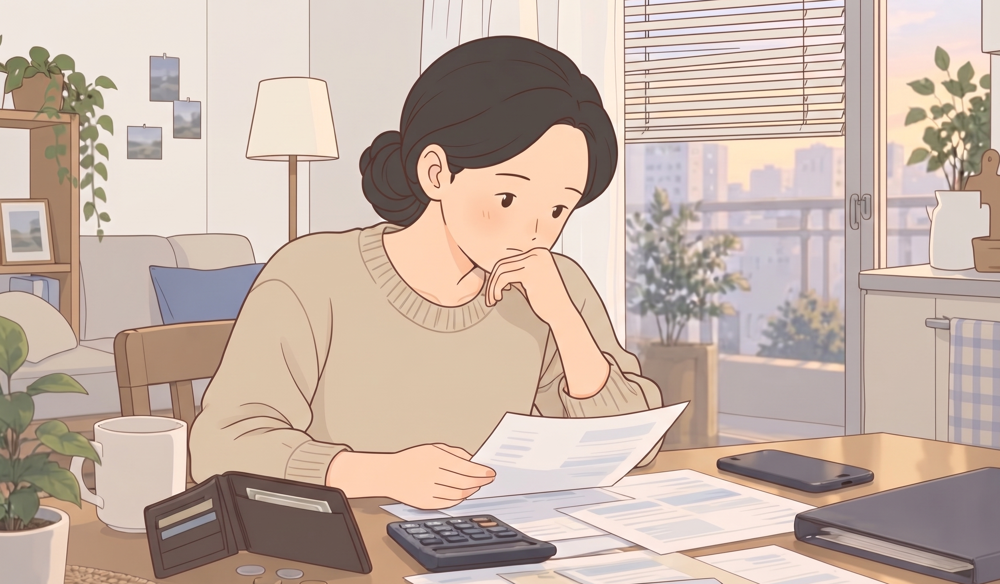
이 씨는 청년 암 환자를 위한 정보를 주로 2030 암 환우 오픈채팅방과 관련 프로그램, 인스타그램, 유튜브 등 SNS를 통해 얻었다. 정보 자체에 접근하는 것은 어렵지 않았지만, 오히려 정보가 여러 곳에 흩어져 있다는 점이 불편했다. 그는 정보가 너무 방대하고 산재해 있다며 청년 암 환자를 위한 일괄 안내 책자가 마련되면 좋겠다고 말했다.
청년 암 환자에게 필요한 것은 치료에 관한 정보만이 아니다. 직장 복귀와 재취업, 경제적 지원, 심리적 어려움 등 치료 이후의 삶과 관련된 정보 역시 중요하다. 하지만 현재는 이러한 정보들을 환자가 직접 찾아야 하는 경우가 많다는 것이 이 씨의 설명이다.
“왜 하필 나일까”라는 질문에서 벗어나기까지
암 진단 이후에는 누구나 미래에 대한 고민을 하게 된다. 이 씨 역시 현실적인 고민들을 마주했다. 그러나 그는 자신의 신앙을 통해 불안과 두려움을 내려놓을 수 있었다고 말했다.
‘왜 하필 나일까’라는 생각이 들 때도 있었지만, 모든 것을 하나님께 맡기면서 상황을 스스로 통제하려 하기보다 앞으로의 길을 믿고 나아가게 됐다는 것이다. 그는 이러한 경험을 통해 미래에 대한 불안과 고민을 조금씩 내려놓을 수 있었다고 설명했다.
“암에 걸렸어도 괜찮아, 절대 포기하지 않았으면”
이 씨는 자신과 같은 시간을 보내고 있는 다른 청년 암 환자들에게 두려움에 머물지 않았으면 한다는 메시지를 전했다.
“저 역시 그 시간을 견뎌왔듯이, 앞으로도 건강을 되찾고
다시 일상으로 나아갈 수 있다는 용기를 전하고 싶어요.”
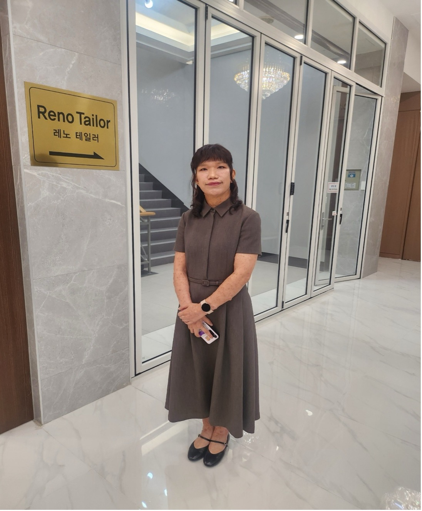